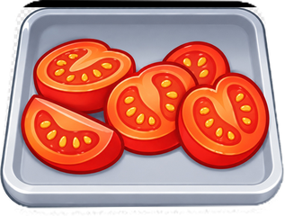
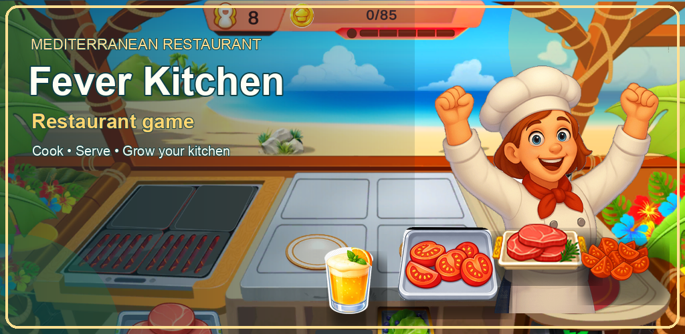
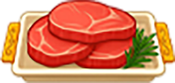
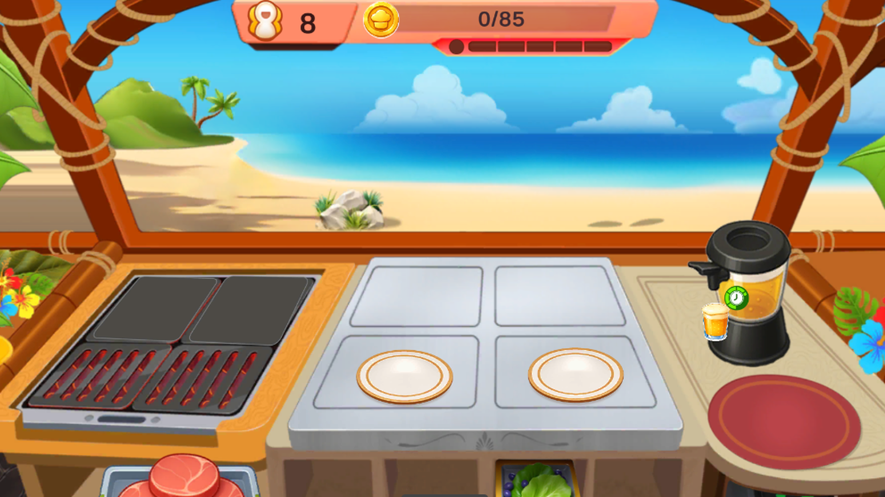
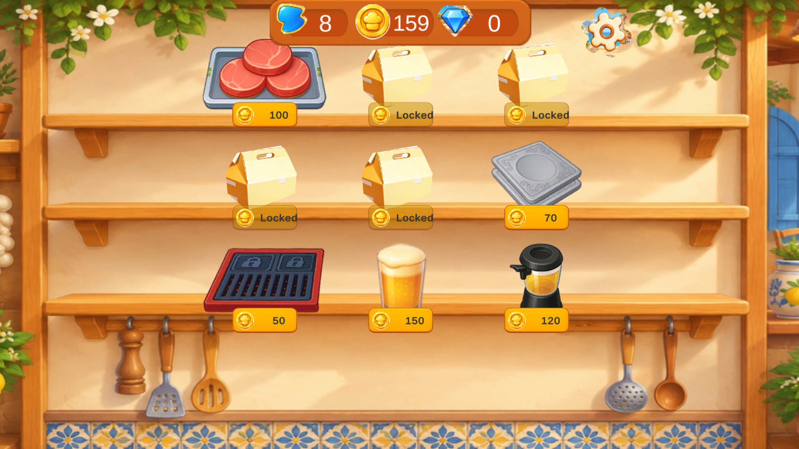
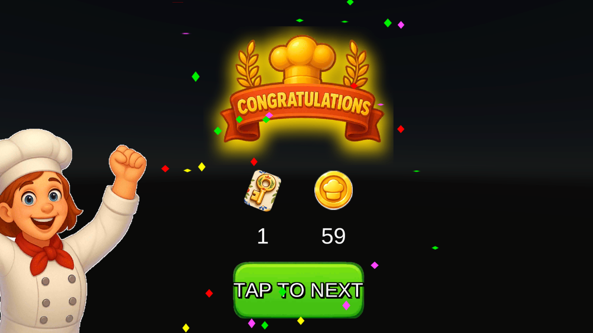

Prepare ingredients
Choose ingredients such as tomatoes, meat, vegetables, sauces, and drinks for each order.
Fever Kitchen: Restaurant game puts you behind the counter. Prepare ingredients, cook orders, serve hungry guests, earn coins, and improve your kitchen one level at a time.

Each level asks you to read orders, prepare the right ingredients, manage cooking time, and deliver plates before guests lose patience.

Choose ingredients such as tomatoes, meat, vegetables, sauces, and drinks for each order.

Use the grill and cooking stations carefully: serve dishes at the right moment and avoid burning them.
Complete orders to earn coins, keep a service streak, and unlock more stations and recipes.
Explore the restaurant, prepare orders, and build a warmer, busier kitchen through the levels.



The game stores progress locally and does not require an account. See the full policy for the exact data and network scope.